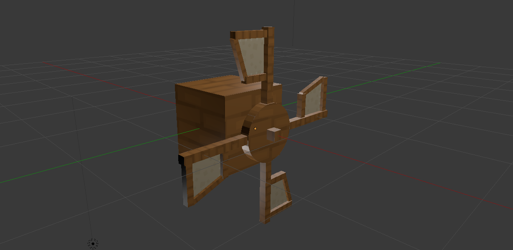
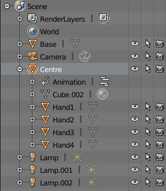
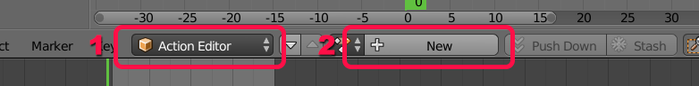
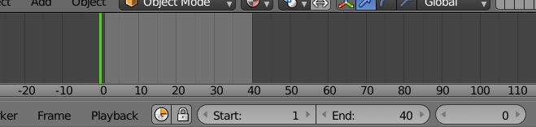
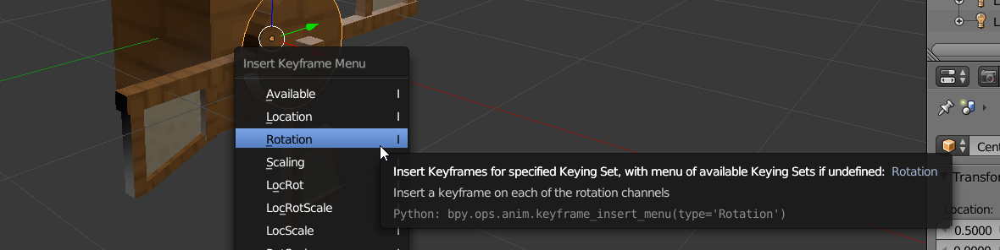
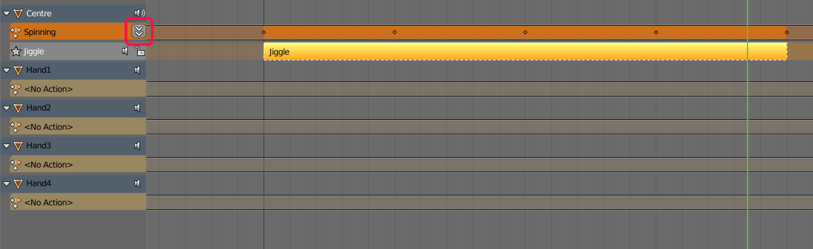
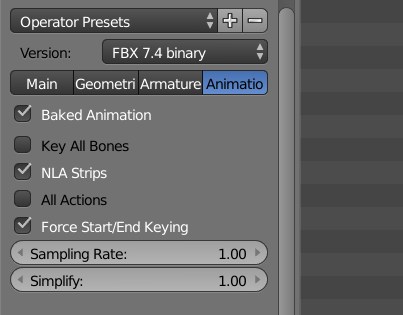
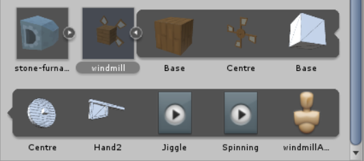

Unity-centric guide to Blender animations
Recently I wanted to model, texture, animate and export to Unity first complex machine in my upcoming game. I searched wide and far and couldn’t find simple text guide on how to animate object, correctly export it and then import it into Unity. This guide hopes to achieve that, guiding you through simple steps on how to create following windmill.
Parenting relevant objects under common parent
I’ll assume you already know how to model and texture an object and if you don’t, you can follow my other guide (there’s also 2nd part). So let’s start with this textured model.

Notice that I decided to parent all 4 hand of windmill under centre, to make animation way easier. You can do that by selecting all 4 hands and only after that selecting centre object. Done that simply press Ctrl+P and select Set parent to Object. If you did it correctly, your outliner window will look something like below. Because I selected centre object last, all hand are nested under it.

Create new action and start animating
While keeping centre selected, switch to Dope sheet (Shift+F12), switch editor to Action Editor and create new action. I’ll name mine Spinning since this is what I want to animate but you can get creative with a name. This is also what you are going to see in Unity Mecanim later on as its own animation state.

Now you can switch back to 3D view (Shift+F5) and start animating. We do animation by changing object properties and inserting new keyframes that remember state of object. Blender then automatically calculates values of object’s properties between frames. If you wish to see all keyframes and move between them, open up Timeline window. I’ve set length of animation to 40 frames and initial frame at 0. I suggest you do the same.

Next step is to set the rotation of object to its initial rotation, keeping mouse pointer over rotation number button and then pressing I. Part of UI that is effected by keyframes change colours and to learn what each colour means, you can check out Blender manual. Since we just inserted new keyframe, rotation number button should change to yellow colour. Next we move keyframe to 10, change centre‘s rotation to 270 and press I again. Don’t forget to hover your mouse over rotation number button when pressing I. If you don’t do this, Insert Keyframe menu will pop up, prompting you which object’s properties you want to save to keyframe. Selecting rotation from this menu is same as hovering over relevant UI and pressing I so choose you poison. 😉

Repeating this 4 more times, rotating object -90° each keyframe, will bring you to keyframe 40 and object’s rotation of 0. If we play animation at this point (Alt+A), we get this nice spinning wheel.
But if you watch closely you will see that at the end of each loop, wheel slows down and then picks up speed again. The spinning movement is not smooth. To fix that we need to switch to Graph Editor (Shift+F6), select all keyframes by pressing A and then enable cyclic mode. To do that, press Shift+E and select Make cyclic (F-Modifier) and Linear interpolation. If we switch back to 3D view, we are greeted by nicely looping spinning windmill wheel.
Prepare animation for Unity
At this point, we successfully animated the wheel but now we need to prepare that animation for Unity. Blender has a lot of export options regarding animation but I find the best way is to save all actions under parent’s track as NLA strips and export only non-muted NLA strips. To work with NLA strips, switch to NLA Editor (no shortcut for that, sorry 🙁) and you will notice each object gets its own track. You will also notice all actions we created in Dope sheet already appear under object’s track as stashed strips. Since we are going to export only non-muted and active strips, we need to push those strips down with little arrow-y button.

If you are working on multiple animations, you will see all of them listed here in NLA editor. By default all actions are non-muted and all of them are going to play at the same time when you press Alt+A. To avoid that, simply mute all but one with little speaker button. Once we created all desired animations and pushed them on NLA track, all we need to do is to correctly export. Bellow is screenshot of correct export settings for animation. If you wish to see settings under Main tab, go read my other guide.

Finally switch to Unity and let it import our new model. If you did everything correctly, you will see our 2 new animations nested under imported model. You will also notice their names are simply Spinning and Jiggle, same as action’s names in Blender. This extra step with NLA editor and strips is sadly the only way to avoid garbage animations that appear if you choose any other export method.

At this point you can use these 2 animations in Mecanim as you would any other animation created in Unity.